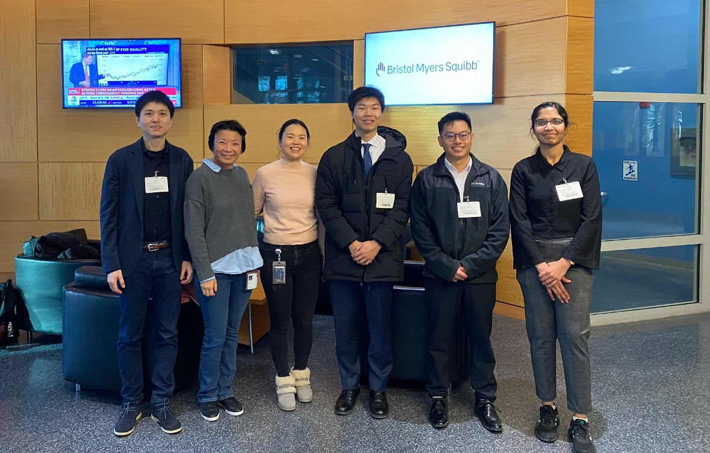

Hello, I'm Amrutha Karuturi, an aspiring Data Science Graduate, on a journey of innovation and exploration. Currently I'm looking for full-time positions in Data Science, Machine Learning, Data Analyst/Engineer. . I completed my Master of Science degree in Data Science at Rutgers University - New Brunswick in May,2025. My academic journey revolved around advanced coursework, encompassing topics such as Statistical Modeling, Statistical Learning, Data Mining, Natural Language Processing, Data Wrangling and more.
Honors and Activities
Neville O'Reilly Award, Department of Statistics, Rutgers university

Winner of 2024 Bristol Myers Squibb Hackathon, Rutgers University
Finalist in RAISE-2025 Hackathon, Rutgers University
Ranked in Top 0.4% amongst 1.2 million in a nationwide engineering entrance examination - JEE Advanced.